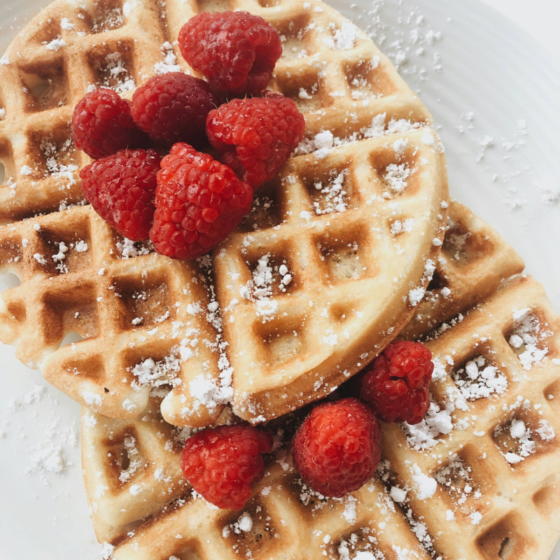

Recipes

Really good waffle recipe
Prep: 10 mins Cook: 25 mins
Video
Ingredients
WAFFLE BATTER
- 2 1/4 cup flour , plain / all purpose
- 2 1/2 tbsp caster sugar / superfine sugar (sub granulated / ordinary sugar)
- 4 tsp baking powder (if yours is old, check it's still good)
- 1 1/3 cup milk , full fat, slightly warmed (not piping hot)
- 1/2 tsp vanilla essence
- 4 large eggs , at room temperature
- 150g / 11 tbsp unsalted butter , melted and slightly cooled (not piping hot)
TOPPING OPTIONS
- Butter , softened (strongly recommended!)
- Maple syrup (strongly recommended!), or honey
- Icing sugar / powdered sugar , for dusting
- Strawberries, other fruit , whipped cream, melted chocolate, jams, fruit compotes, creme fraiche, strawberry sauce, blueberry or other sauce, ice cream
Instructions
- Whisk dry – Place the flour, sugar, baking powder and salt in a large mixing bowl. Whisk to mix.
- Whisk in wet – Add milk, eggs and vanilla. Whisk to combine. Add melted butter then whisk until lump free. The batter should be pourable but thick – slightly thinner than pancakes.
- Recommended resting – Cover then refrigerate overnight, or for at least 2 hours. Softer insides, better flavour. Else, proceed immediately with cooking.
- Preheat a waffle maker. A non stick one will not need oil, plus there is butter in the batter.
- Cooking – Use a ladle to pour batter in to just cover the iron. Don't get greedy – it will leak out the sides! Cook until golden and crisp – my good waffle iron takes 3 1/2 minutes, my Kmart one takes 6 minutes.
- Serving – Transfer onto plates and serve as you go, with desired toppings. Or, put on a rack and keep warm in a preheated 70°C/150°F oven while you continue cooking!
Click on the carousel to see other recipes
That's a lie, I haven't made other recipe pages yet, just to test the carousel from Bootstrap